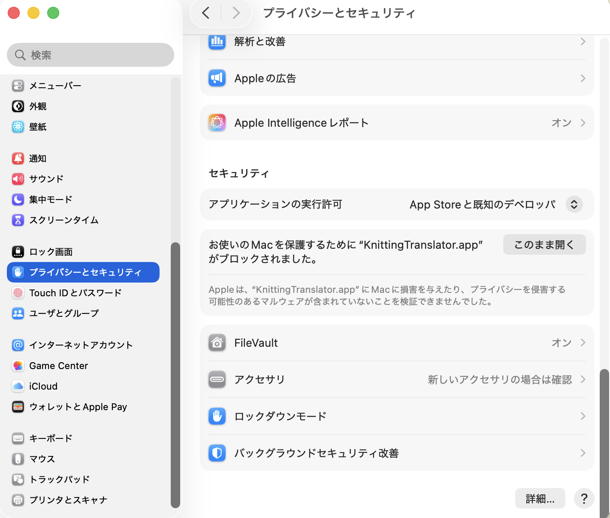

Step by step
Installインストール
ダウンロードから、アプリを初めて開くまでの手順です。数分で終わります。
Requirements動作環境
- macOS
- 14 Sonoma 以降
- Mac
- Apple シリコン（M1 以降）を搭載した Mac
- 通信
- 翻訳中はインターネットに接続している必要があります
- そのほか
- Google AI の API キー（無料。作り方は使い方のページにあります）
01 / Downloadダウンロード
下のボタンを押すと、ダウンロードフォルダに KnittingTranslator.dmg が保存されます。
02 / Moveアプリケーションフォルダにドラッグする
- ダウンロードフォルダの
KnittingTranslator.dmgをダブルクリックします。KnittingTranslator のアプリと、アプリケーションフォルダのアイコンが並んだウインドウが開きます。 - KnittingTranslator をアプリケーションフォルダのアイコンの上までドラッグして離します。アプリがアプリケーションフォルダにコピーされます。
- ウインドウを閉じ、Finder のサイドバーの「場所」にある KnittingTranslator の横の取り出しボタン（⏏）を押します。
アプリは、ウインドウの中から直接開かず、アプリケーションフォルダに移してから開いてください。移し終えたら、KnittingTranslator.dmg はゴミ箱に入れてかまいません。
03 / First launch初めて開くときは、警告が出ます
このアプリは Apple の公証（Apple がアプリに悪意のあるソフトウェアが含まれていないかを検査する手続き）を受けていません。そのため、インターネットから入手したアプリを初めて開くとき、macOS がアプリを止めて警告を出します。下の手順で、このアプリを開くことを許可してください。
macOS 15 Sequoia 以降の場合
- KnittingTranslator をダブルクリックします。「開いていません」という画面が出たら、「完了」を押して閉じます。
- アップルメニューから「システム設定」を開き、サイドバーの「プライバシーとセキュリティ」を選びます。
- 右側を下までスクロールすると、「セキュリティ」の欄に「お使いの Mac を保護するために “KnittingTranslator.app” がブロックされました。」と表示されています。その横の「このまま開く」を押します。
- Mac のログインパスワードを入力します。もう一度確認の画面が出たら「このまま開く」を押します。

macOS 14 Sonoma の場合
- Finder でアプリケーションフォルダを開き、control キーを押しながら KnittingTranslator をクリックします。
- 出てきたメニューから「開く」を選び、確認の画面でもう一度「開く」を押します。
許可は 1 回で済みます。2 回目からはダブルクリックするだけで開きます。
「壊れているため開けません」と表示されて開けない場合は、よくある質問を見てください。
04 / API keyAPI キーを登録します
アプリを初めて開くと、API キーの入力画面が出ます。API キーの作り方と登録のしかたは、使い方のページにあります。
Next